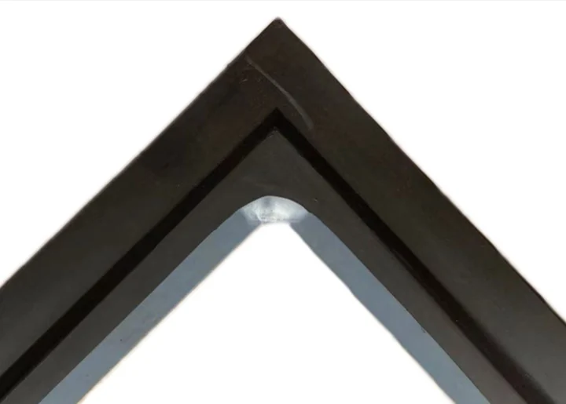

Aplicacao e retrofit
A Metatecno fornece celulas novas, vedacoes de reposicao e retrofit de gap de membrana para celulas BlueStar, tipo Asahi Kasei, tipo Chlorine Engineers, DD350, tipo UHDE e tipo INEOS.

Vedação industrial em borracha e fluoroplástico, Células eletrolíticas e vedações.




Células eletrolíticas e vedações
| Product code | MT-F2-A |
|---|---|
| Application | Anode sealing for F2 ion-membrane electrolyzer cells |
| Compatible cells | F2 cells and matching retrofit assemblies |
| Standard material | EPDM / FKM / custom compound by medium |
| Hardness | 65 +/- 5 Shore A, or per drawing |
| Operating temperature | -40 C to +120 C continuous, subject to compound selection |
| Chemical service | Brine, chlorine environment and chlor-alkali service media |
| Dimensions | Per customer drawing, sample or retrofit requirement |
| Manufacturing scope | New electrolyzer cells, replacement sealing parts and membrane-gap retrofit projects |
| Quality documents | Inspection records prepared according to the order requirement |
A Metatecno fornece celulas novas, vedacoes de reposicao e retrofit de gap de membrana para celulas BlueStar, tipo Asahi Kasei, tipo Chlorine Engineers, DD350, tipo UHDE e tipo INEOS.
EPDM e comum em cloro-alcali. FKM, NBR e compostos customizados podem ser avaliados para requisitos especiais.
Limpe as faces, confirme alinhamento, evite torcao, aperte em cruz e confira o torque apos a compressao inicial.
Inspecao visual, dimensoes criticas, dureza, tracao, alongamento, deformacao por compressao e rastreabilidade de lote.
Embalagem em saco PE, caixa de papelao ou madeira de exportacao conforme tamanho e projeto.
Envie desenhos, meio e condições de operação. Nossa equipe responderá com uma proposta adequada.
Produtos em destaque
Metatecno